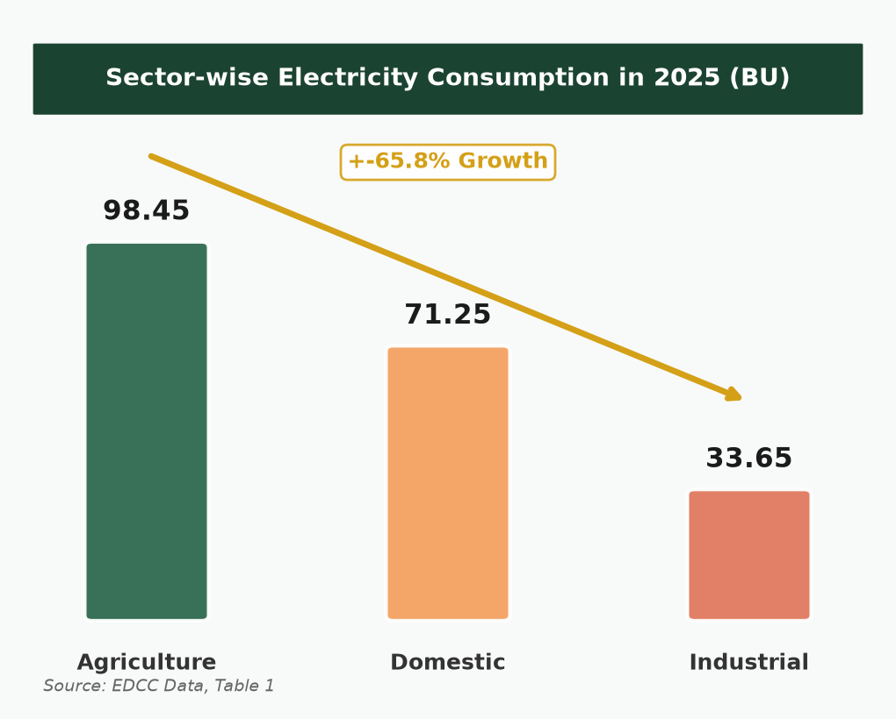
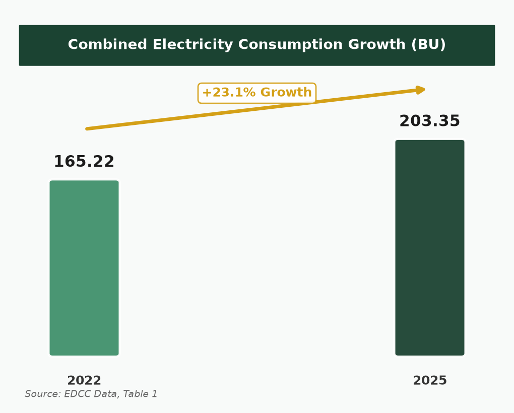
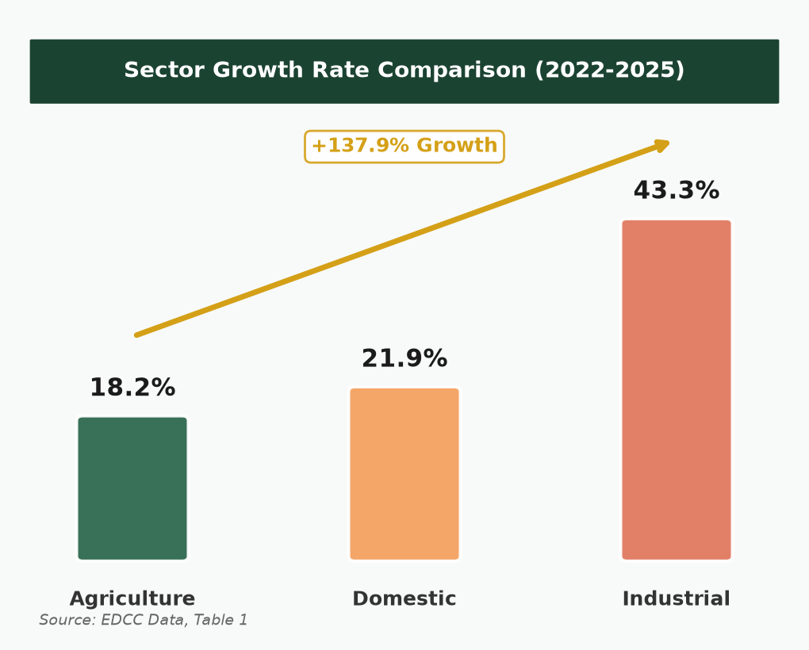
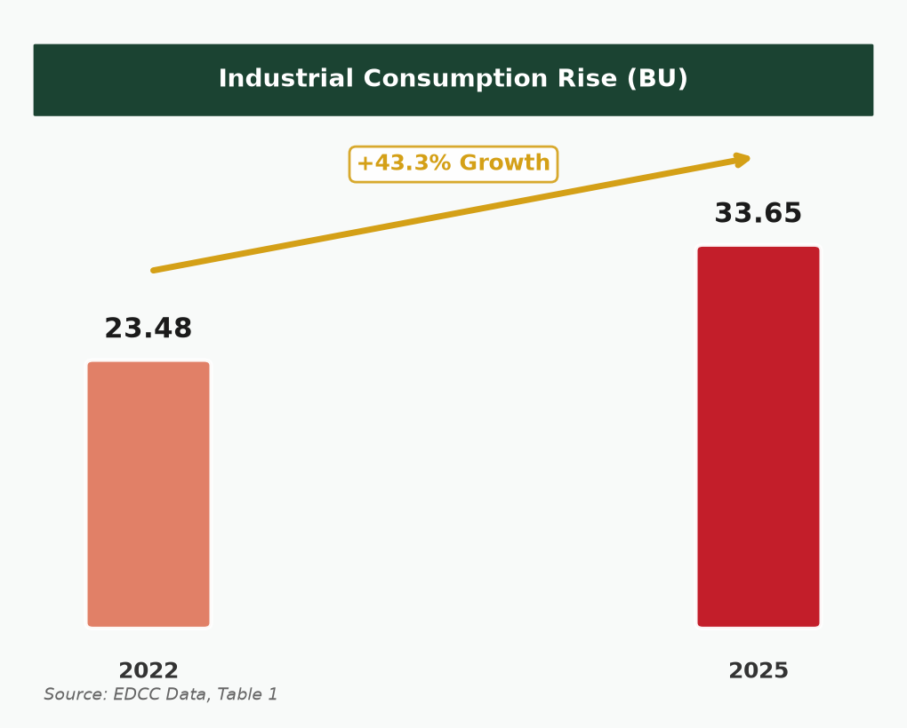
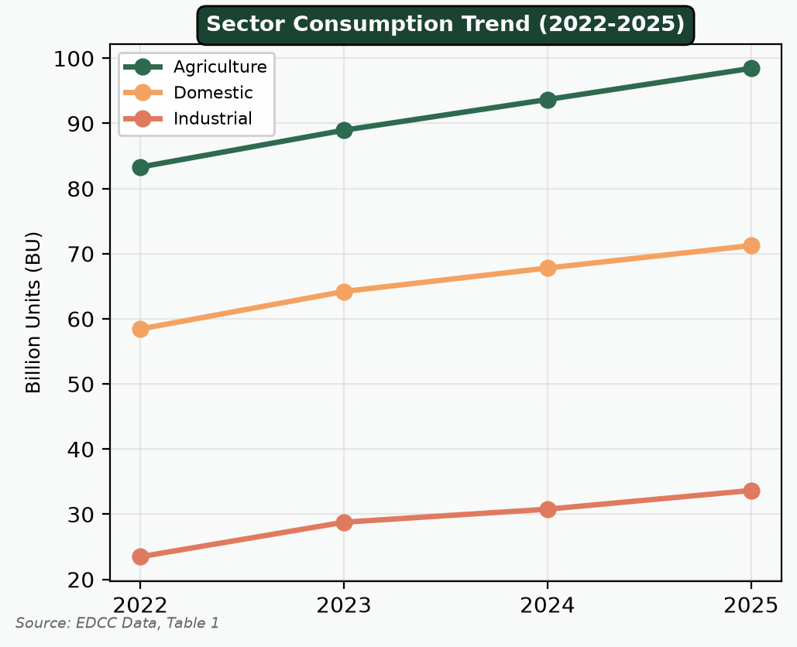
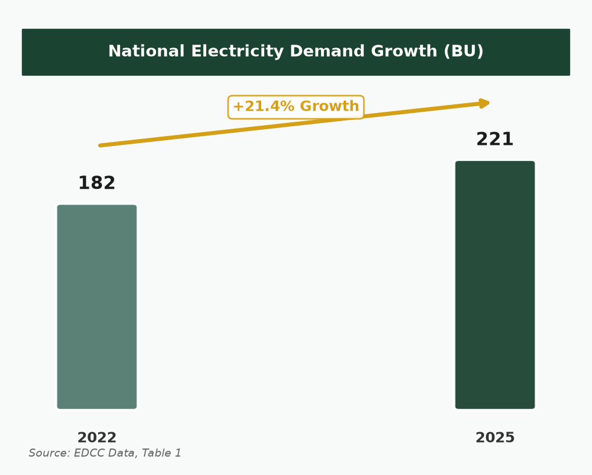

Trend in Electricity Consumption
Sector-Wise Analysis & Overall Growth Patterns (2022–2025)
Prepared by: Jaya | August 2026
- Combined electricity consumption across three sectors rose from 165.22 BU (2022) to 203.35 BU (2025) — a growth of 23.1%.
- Agriculture remains the largest consumer at 98.45 BU, accounting for 48.4% of total sector consumption in 2025.
- Domestic consumption grew to 71.25 BU, driven by rapid urbanisation and higher use of air conditioners.
- Industrial consumption recorded the sharpest single-year jump of 22.6% in 2022–23, reaching 33.65 BU by 2025.
- National total demand increased from 182 BU to 221 BU, closely aligning with the three-sector growth trend of 21.4%.
Electricity consumption in India has increased steadily across agriculture, industrial, and domestic sectors between 2022 and 2025. Every sector recorded higher consumption in each successive year without any decline. This continuous rise reflects growing pressure on India's power infrastructure and supports the Chairman's concern regarding sustainable electricity management.
Table 1: Sector-wise Electricity Consumption (Billion Units)
| Sector | 2022 | 2023 | 2024 | 2025 | Growth |
|---|
| 🌾 Agriculture |
83.30 | 88.96 | 93.67 | 98.45 |
+18.2% |
| 🏠 Domestic |
58.44 | 64.20 | 67.80 | 71.25 |
+21.9% |
| 🏭 Industrial |
23.48 | 28.78 | 30.78 | 33.65 |
+43.3% |
98.45 BU
Agriculture — Largest Consumer
48.4% Share | +18.2%
71.25 BU
Domestic — 2nd Largest
35.1% Share | +21.9%
33.65 BU
Industrial — Fastest Growing
16.6% Share | +43.3%


Highest Growth Sector Analysis
Identification of Dominant Sector & Key Drivers of Growth
Prepared by: Jaya | August 2026
- The Industrial sector recorded the highest growth at 43.3% — more than double agriculture (18.2%) and domestic (21.9%).
- Industrial CAGR of 12.7% is the highest among all sectors, with a peak single-year growth of 22.6% in 2022–23.
- Industrial share of domestic consumption rose from 40.2% to 47.2%, signalling a structural shift in demand.
- Main drivers: industrial expansion, increased agricultural irrigation, and rapid urbanisation with higher AC use.
- All three sectors contribute to peak electricity demand alongside cooling requirements.
After comparing consumption data across all three sectors from 2022 to 2025, the industrial sector clearly emerges as the highest-growth segment. While agriculture adds the most absolute consumption, industry is expanding at the fastest rate — a trend with significant implications for power supply planning and infrastructure development.
Comparative Growth Analysis (2022–2025)
| Measure | Agriculture | Industrial | Domestic |
|---|
| 2022 Consumption (BU) | 83.30 | 23.48 | 58.44 |
| 2025 Consumption (BU) | 98.45 | 33.65 | 71.25 |
| Absolute Growth (BU) | +15.15 | +10.17 | +12.81 |
| Percentage Growth | 18.2% | 43.3% | 21.9% |
| CAGR | 5.8% | 12.7% | 6.7% |
| Best Single Year | 6.8% | 22.6% | 9.9% |


Key Drivers of Sectoral Growth
🏭 Industrial (+43.3%)
• Industrial expansion
• Continuous year-on-year rise
• Round-the-clock peak demand pressure
• 22.6% surge in 2022–23
🌾 Agriculture (+18.2%)
• Increased agricultural irrigation
• Largest consumption base (83.30 BU)
• Seasonal peak load contribution
• Steady 5–7% annual growth
🏠 Domestic (+21.9%)
• Rapid urbanisation
• Higher use of air conditioners
• Rising household appliance use
• Consistent 5–10% annual growth


Conclusion: Electricity consumption rose in every sector every year from 2022 to 2025. Combined consumption grew 23.1% (165.22 → 203.35 BU). Agriculture remains the largest consumer (98.45 BU), but the industrial sector recorded the highest growth at 43.3%. These findings confirm the need for effective energy planning and sustainable electricity management as highlighted by the Chairman of the Council.